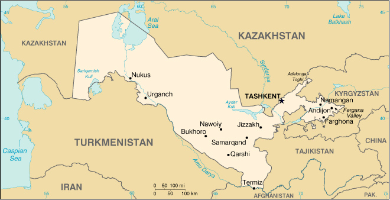

|
Uzbekistan | |
| Introduction Geography People Government Economy Communications Transportation Military Transnational Issues | ||
|  | ||
| Uzbekistan | Introduction | Top of Page |
| Background: | Russia conquered Uzbekistan in the late 19th century. Stiff resistance to the Red Army after World War I was eventually suppressed and a socialist republic set up in 1925. During the Soviet era, intensive production of "white gold" (cotton) and grain led to overuse of agrochemicals and the depletion of water supplies, which have left the land poisoned and the Aral Sea and certain rivers half dry. Independent since 1991, the country seeks to gradually lessen its dependence on agriculture while developing its mineral and petroleum reserves. Current concerns include insurgency by Islamic militants based in Tajikistan and Afghanistan, a non-convertible currency, and the curtailment of human rights and democratization. |
| Uzbekistan | Geography | Top of Page |
| Location: | Central Asia, north of Afghanistan |
| Geographic coordinates: | 41 00 N, 64 00 E |
| Map references: | Commonwealth of Independent States |
| Area: |
total:
447,400 sq km
land: 425,400 sq km water: 22,000 sq km |
| Area - comparative: | slightly larger than California |
| Land boundaries: |
total:
6,221 km
border countries: Afghanistan 137 km, Kazakhstan 2,203 km, Kyrgyzstan 1,099 km, Tajikistan 1,161 km, Turkmenistan 1,621 km |
| Coastline: | 0 km; note - Uzbekistan includes the southern portion of the Aral Sea with a 420 km shoreline |
| Maritime claims: | none (doubly landlocked) |
| Climate: | mostly midlatitude desert, long, hot summers, mild winters; semiarid grassland in east |
| Terrain: | mostly flat-to-rolling sandy desert with dunes; broad, flat intensely irrigated river valleys along course of Amu Darya, Sirdaryo (Syr Darya), and Zarafshon; Fergana Valley in east surrounded by mountainous Tajikistan and Kyrgyzstan; shrinking Aral Sea in west |
| Elevation extremes: |
lowest point:
Sariqarnish Kuli -12 m
highest point: Adelunga Toghi 4,301 m |
| Natural resources: | natural gas, petroleum, coal, gold, uranium, silver, copper, lead and zinc, tungsten, molybdenum |
| Land use: |
arable land:
9%
permanent crops: 1% permanent pastures: 46% forests and woodland: 3% other: 41% (1993 est.) |
| Irrigated land: | 40,000 sq km (1993 est.) |
| Natural hazards: | NA |
| Environment - current issues: | drying up of the Aral Sea is resulting in growing concentrations of chemical pesticides and natural salts; these substances are then blown from the increasingly exposed lake bed and contribute to desertification; water pollution from industrial wastes and the heavy use of fertilizers and pesticides is the cause of many human health disorders; increasing soil salination; soil contamination from agricultural chemicals, including DDT |
| Environment - international agreements: |
party to:
Biodiversity, Climate Change, Climate Change-Kyoto Protocol, Desertification, Endangered Species, Environmental Modification, Hazardous Wastes, Ozone Layer Protection
signed, but not ratified: none of the selected agreements |
| Geography - note: | along with Liechtenstein, one of the only two doubly landlocked countries in the world |
| Uzbekistan | People | Top of Page |
| Population: | 25,155,064 (July 2001 est.) |
| Age structure: |
0-14 years:
36.32% (male 4,646,341; female 4,489,265)
15-64 years: 59.06% (male 7,351,908; female 7,504,626) 65 years and over: 4.62% (male 466,029; female 696,895) (2001 est.) |
| Population growth rate: | 1.6% (2001 est.) |
| Birth rate: | 26.1 births/1,000 population (2001 est.) |
| Death rate: | 8 deaths/1,000 population (2001 est.) |
| Net migration rate: | -2.06 migrant(s)/1,000 population (2001 est.) |
| Sex ratio: |
at birth:
1.05 male(s)/female
under 15 years: 1.03 male(s)/female 15-64 years: 0.98 male(s)/female 65 years and over: 0.67 male(s)/female total population: 0.98 male(s)/female (2001 est.) |
| Infant mortality rate: | 71.92 deaths/1,000 live births (2001 est.) |
| Life expectancy at birth: |
total population:
63.81 years
male: 60.24 years female: 67.56 years (2001 est.) |
| Total fertility rate: | 3.06 children born/woman (2001 est.) |
| HIV/AIDS - adult prevalence rate: | less than 0.01% (1999 est.) |
| HIV/AIDS - people living with HIV/AIDS: | less than 100 (1999 est.) |
| HIV/AIDS - deaths: | less than 100 (1999 est.) |
| Nationality: |
noun:
Uzbekistani(s)
adjective: Uzbekistani |
| Ethnic groups: | Uzbek 80%, Russian 5.5%, Tajik 5%, Kazakh 3%, Karakalpak 2.5%, Tatar 1.5%, other 2.5% (1996 est.) |
| Religions: | Muslim 88% (mostly Sunnis), Eastern Orthodox 9%, other 3% |
| Languages: | Uzbek 74.3%, Russian 14.2%, Tajik 4.4%, other 7.1% |
| Literacy: |
definition:
age 15 and over can read and write
total population: 99% male: 99% female: 99% (yearend 1996) |
| Uzbekistan | Government | Top of Page |
| Country name: |
conventional long form:
Republic of Uzbekistan
conventional short form: Uzbekistan local long form: Uzbekiston Respublikasi local short form: none former: Uzbek Soviet Socialist Republic |
| Government type: | republic; effectively authoritarian presidential rule, with little power outside the executive branch |
| Capital: | Tashkent (Toshkent) |
| Administrative divisions: |
12 wiloyatlar (singular - wiloyat), 1 autonomous republic* (respublikasi), and 1 city** (shahri); Andijon Wiloyati, Bukhoro Wiloyati, Farghona Wiloyati, Jizzakh Wiloyati, Khorazm Wiloyati (Urganch), Namangan Wiloyati, Nawoiy Wiloyati, Qashqadaryo Wiloyati (Qarshi), Qoraqalpoghiston* (Nukus), Samarqand Wiloyati, Sirdaryo Wiloyati (Guliston), Surkhondaryo Wiloyati (Termiz), Toshkent Shahri**, Toshkent Wiloyati
note: administrative divisions have the same names as their administrative centers (exceptions have the administrative center name following in parentheses) |
| Independence: | 1 September 1991 (from Soviet Union) |
| National holiday: | Independence Day, 1 September (1991) |
| Constitution: | new constitution adopted 8 December 1992 |
| Legal system: | evolution of Soviet civil law; still lacks independent judicial system |
| Suffrage: | 18 years of age; universal |
| Executive branch: |
chief of state:
President Islom KARIMOV (since 24 March 1990, when he was elected president by the then Supreme Soviet)
head of government: Prime Minister Otkir SULTONOV (since 21 December 1995) cabinet: Cabinet of Ministers appointed by the president with approval of the Supreme Assembly elections: president elected by popular vote for a five-year term; election last held 9 January 2000 (next to be held NA January 2005); note - extension of President KARIMOV's original term for an additional five years overwhelmingly approved - 99.6% of total vote in favor - by national referendum held 27 March 1995; prime minister and deputy ministers appointed by the president election results: Islom KARIMOV reelected president; percent of vote - Islom KARIMOV 91.9%, Abdulkhafiz DZHALALOV 4.2% |
| Legislative branch: |
unicameral Supreme Assembly or Oliy Majlis (250 seats; members elected by popular vote to serve five-year terms)
elections: last held 5 December and 19 December 1999 (next to be held NA December 2004) election results: percent of vote by party - NA%; seats by party - NDP 48, Self-Sacrificers Party 34, Fatherland Progress Party 20, Adolat Social Democratic Party 11, MTP 10, citizens' groups 16, local government 110, vacant 1 note: not all seats in the last Supreme Assembly election were contested; all parties in the Supreme Assembly support President KARIMOV |
| Judicial branch: | Supreme Court (judges are nominated by the president and confirmed by the Supreme Assembly) |
| Political parties and leaders: | Adolat (Justice) Social Democratic Party [Anwar JURABAYEV, first secretary]; Democratic National Rebirth Party (Milly Tiklanish) or MTP [Aziz KAYUMOV, chairman]; Fatherland Progress Party [Anwar Z. YOLDASHEV]; People's Democratic Party or NDP (formerly Communist Party) [Abdulkhafiz JALOLOV, first secretary]; Self-Sacrificers Party or Fidokorlar National Democratic Party [Ahtam TURSUNOV, first secretary] |
| Political pressure groups and leaders: | Birlik (Unity) Movement [Abdurakhim PULAT, chairman]; Erk (Freedom) Democratic Party [Muhammad SOLIH, chairman] was banned 9 December 1992; Human Rights Society of Uzbekistan [Abdumanob PULAT, chairman]; Independent Human Rights Society of Uzbekistan [Mikhail ARDZINOV, chairman] |
| International organization participation: | AsDB, CCC, CIS, EAPC, EBRD, ECE, ECO, ESCAP, IAEA, IBRD, ICAO, ICRM, IDA, IFC, IFRCS, ILO, IMF, Intelsat, Interpol, IOC, ISO, ITU, NAM, OIC, OPCW, OSCE, PFP, UN, UNCTAD, UNESCO, UNIDO, UPU, WFTU, WHO, WIPO, WMO, WToO, WTrO (observer) |
| Diplomatic representation in the US: |
chief of mission:
Ambassador Shavkat HAMRAKULOV
chancery: 1746 Massachusetts Avenue NW, Washington, DC 20036 telephone: [1] (202) 887-5300 FAX: [1] (202) 293-6804 consulate(s) general: New York |
| Diplomatic representation from the US: |
chief of mission:
Ambassador John Edward HERBST
embassy: 82 Chilanzarskaya, Tashkent 700115 mailing address: use embassy street address; US Embassy Tashkent, Department of State, Washington, DC 20521-7110 telephone: [998] (71) 120-5444 FAX: [998] (71) 120-6335 |
| Flag description: | three equal horizontal bands of blue (top), white, and green separated by red fimbriations with a white crescent moon and 12 white stars in the upper hoist-side quadrant |
| Uzbekistan | Economy | Top of Page |
| Economy - overview: | Uzbekistan is a dry, landlocked country of which 10% consists of intensely cultivated, irrigated river valleys. More than 60% of its population lives in densely populated rural communities. Uzbekistan is now the world's third largest cotton exporter, a large producer of gold and oil, and a regionally significant producer of chemicals and machinery. Following independence in December 1991, the government sought to prop up its Soviet-style command economy with subsidies and tight controls on production and prices. Faced with high rates of inflation, however, the government began to reform in mid-1994, by introducing tighter monetary policies, expanding privatization, slightly reducing the role of the state in the economy, and improving the environment for foreign investors. The state continues to be a dominating influence in the economy and has so far failed to bring about much-needed structural changes. The IMF suspended Uzbekistan's $185 million standby arrangement in late 1996 because of governmental steps that made impossible fulfillment of Fund conditions. Uzbekistan has responded to the negative external conditions generated by the Asian and Russian financial crises by tightening export and currency controls within its already largely closed economy. Economic policies that have repelled foreign investment are a major factor in the economy's stagnation. A growing debt burden, persistent inflation, and a poor business climate led to stagnant growth in 2000, with little improvement predicted for 2001. |
| GDP: | purchasing power parity - $60 billion (2000 est.) |
| GDP - real growth rate: | 2.1% (2000 est.) |
| GDP - per capita: | purchasing power parity - $2,400 (2000 est.) |
| GDP - composition by sector: |
agriculture:
28%
industry: 21% services: 51% (1999 est.) |
| Population below poverty line: | NA% |
| Household income or consumption by percentage share: |
lowest 10%:
3.1%
highest 10%: 25.2% (1993) |
| Inflation rate (consumer prices): | 40% (2000 est.) |
| Labor force: | 11.9 million (1998 est.) |
| Labor force - by occupation: | agriculture 44%, industry 20%, services 36% (1995) |
| Unemployment rate: | 10% plus another 20% underemployed (1999 est.) |
| Budget: |
revenues:
$4 billion
expenditures: $4.1 billion, including capital expenditures of $NA (1999 est.) |
| Industries: | textiles, food processing, machine building, metallurgy, natural gas, chemicals |
| Industrial production growth rate: | 6.4% (2000 est.) |
| Electricity - production: | 42.876 billion kWh (1999) |
| Electricity - production by source: |
fossil fuel:
86.4%
hydro: 13.6% nuclear: 0% other: 0% (1999) |
| Electricity - consumption: | 43.455 billion kWh (1999) |
| Electricity - exports: | 3.92 billion kWh (1999) |
| Electricity - imports: | 7.5 billion kWh (1999) |
| Agriculture - products: | cotton, vegetables, fruits, grain; livestock |
| Exports: | $2.9 billion (f.o.b., 2000 est.) |
| Exports - commodities: | cotton, gold, natural gas, mineral fertilizers, ferrous metals, textiles, food products, automobiles |
| Exports - partners: | Russia 13%, Switzerland 10%, UK 10%, Belgium 3%, Kazakhstan 4%, Tajikistan 4% (1999) |
| Imports: | $2.6 billion (f.o.b., 2000 est.) |
| Imports - commodities: | machinery and equipment, chemicals, metals; foodstuffs |
| Imports - partners: | Russia 14%, South Korea 14%, Germany 11%, US 8%, Turkey 4%, Kazakhstan 4% (1999) |
| Debt - external: | $3.3 billion (1999 est.) |
| Economic aid - recipient: | $276.6 million (1995) |
| Currency: | Uzbekistani sum (UZS) |
| Currency code: | UZS |
| Exchange rates: | Uzbekistani sums per US dollar - 325.0 (January 2001), 141.4 (January 2000), 111.9 (February 1999), 110.95 (December 1998), 75.8 (September 1997), 41.1 (1996) |
| Fiscal year: | calendar year |
| Uzbekistan | Communications | Top of Page |
| Telephones - main lines in use: | 1.98 million (1999) |
| Telephones - mobile cellular: | 26,000 (1998) |
| Telephone system: |
general assessment:
antiquated and inadequate; in serious need of modernization
domestic: the domestic telephone system is being expanded and technologically improved, particularly in Tashkent and Samarqand, under contracts with prominent companies in industrialized countries; moreover, by 1998, six cellular networks had been placed in operation - four of the GSM type (Global System for Mobile Communication), one D-AMPS type (Digital Advanced Mobile Phone System), and one AMPS type (Advanced Mobile Phone System) international: linked by landline or microwave radio relay with CIS member states and to other countries by leased connection via the Moscow international gateway switch; after the completion of the Uzbek link to the Trans-Asia-Europe (TAE) fiber-optic cable, Uzbekistan will be independent of Russian facilities for international communications; Inmarsat also provides an international connection, albeit an expensive one; satellite earth stations - NA (1998) |
| Radio broadcast stations: | AM 20, FM 7, shortwave 10 (1998) |
| Radios: | 10.8 million (1997) |
| Television broadcast stations: | 4 (plus two repeaters that relay Russian, Kazakh, Kyrgyz, and Tadzhik programs) (1997) |
| Televisions: | 6.4 million (1997) |
| Internet country code: | .uz |
| Internet Service Providers (ISPs): | 42 (2000) |
| Internet users: | 7,500 (2000) |
| Uzbekistan | Transportation | Top of Page |
| Railways: |
total:
3,380 km in common carrier service; does not include industrial lines
broad gauge: 3,380 km 1.520-m gauge (300 km electrified) (1993) |
| Highways: |
total:
81,600 km
paved: 71,237 km (these roads are said to be hard-surfaced, and include, in addition to conventionally paved roads, some that are surfaced with gravel or other coarse aggregate, making them trafficable in all weather) unpaved: 10,363 km (these roads are made of unstabilized earth and are difficult to negotiate in wet weather) (1996) |
| Waterways: | 1,100 km (1990) |
| Pipelines: | crude oil 250 km; petroleum products 40 km; natural gas 810 km (1992) |
| Ports and harbors: | Termiz (Amu Darya river) |
| Airports: | 267 (2000 est.) |
| Airports - with paved runways: |
total:
10
over 3,047 m: 3 2,438 to 3,047 m: 5 under 914 m: 2 (2000 est.) |
| Airports - with unpaved runways: |
total:
257
over 3,047 m: 3 2,438 to 3,047 m: 8 1,524 to 2,437 m: 11 914 to 1,523 m: 13 under 914 m: 222 |
| Uzbekistan | Military | Top of Page |
| Military branches: | Army, Air and Air Defense Forces, Security Forces (internal and border troops), National Guard |
| Military manpower - military age: | 18 years of age |
| Military manpower - availability: | males age 15-49: 6,550,587 (2001 est.) |
| Military manpower - fit for military service: | males age 15-49: 5,318,418 (2001 est.) |
| Military manpower - reaching military age annually: | males: 274,602 (2001 est.) |
| Military expenditures - dollar figure: | $200 million (FY97) |
| Military expenditures - percent of GDP: | 2% (FY97) |
| Uzbekistan | Transnational Issues | Top of Page |
| Disputes - international: | occasional target of Islamic insurgents based in Tajikistan and Afghanistan |
| Illicit drugs: | limited illicit cultivation of cannabis and very small amounts of opium poppy, mostly for domestic consumption, almost entirely eradicated by an effective government eradication program; increasingly used as transshipment point for illicit drugs from Afghanistan to Russia and Western Europe and for acetic anhydride destined for Afghanistan |
{kind=link}